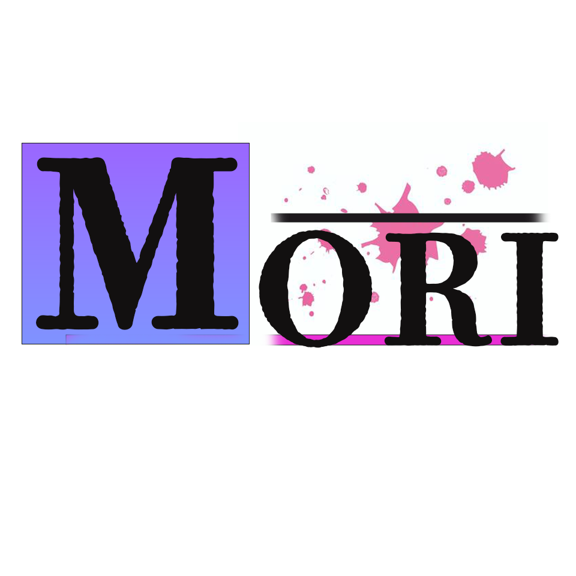

About Me

Atelier MoRITA
「動かすことで、価値を伝える」
Atelier MoRITAは、動画制作とグラフィックデザインを軸に活動する個人クリエイティブ・ラボです。
職業訓練にてデザインの基礎（Illustrator/Photoshop）を体系的に学び、After EffectsやPremiere Proを用いた高度なモーション制作を独学で習得しました。
単に「作る」だけでなく、自社YouTubeチャンネルの運営を通じて培った「視聴者心理」と「データ分析」をデザインに反映。「1秒で目を引き、最後まで飽きさせない」映像表現を追求しています。
Special Skills： モーショングラフィックス、動画編集、イラスト制作、エアブラシ塗装、タロット占い（インスピレーションの源泉）
Atelier MoRITAのコア・バリューは、技術への探究心と徹底したクオリティへのこだわりです。
- 1. 越境するスキルアップ： デザインの枠に留まらず、3D制作（Blender）やコーディングなど、新しい技術を常に吸収し、表現の幅を広げ続けています。
- 2. 執念に近い「微調整」： 0.1秒単位のイージングや、1ピクセルの配置にこだわります。違和感を解消し、心地よいリズムを生むまで試行錯誤を惜しみません。
- 3. 課題解決のデザイン： 「かっこいい」のその先へ。クリック率の改善や情報の分かりやすさなど、クライアントの課題を解決するための「機能するデザイン」を提案します。
Works
After Effects モーション演出
「グリッチ」「手書きアニメーション」「パーティクル」など、視聴者の視線を釘付けにする最新の文字演出を1つにまとめたデモ映像です。
▶ クリックで制作解説（使用ソフト・制作工程）を見る
インフォグラフィック・モーション演出
複雑なデータや数値を視覚的に整理し、直感的に伝えるモーションデザインです。「動くグラフ」「数値のカウントアップ」「アイコンアニメーション」など、視聴者の理解を助ける演出を1つにまとめました。
▶ クリックで制作意図・技術解説を見る
キャラクターアニメーション演出
キャラクターの動きで視聴者の興味を惹きつける、教材・紹介向けの動画演出です。静止画のイラストに命を吹き込み、温かみのあるトーンで情報を分かりやすく整理して伝えます。
Tools: After Effects / Illustrator / Clip Studio Paint
キネティック・タイポグラフィ制作（楽曲：千本桜）
楽曲の世界観を「動く文字」で視覚化。音とデザインを同期させたインパクトのある映像演出を追求しました。
コンセプト： 聴覚情報を視覚へ変換し、楽曲の熱量を最大化する
ターゲット： 独自のMV制作を検討しているアーティスト、SNSでの動画広告担当者
制作目的:リリックビデオの練習の為
参照:楽曲: WhiteFlame feat. 初音ミクにによるMV。作詞・作曲: 黒うさP。https://utaten.com/lyric/jb51202055/
制作のポイント：
- リズムとの同期（シンクロ）: 0.1秒単位で歌詞の出現タイミングを調整し、心地よい疾走感を演出。
- 和風×スチームパンク: 楽曲に合わせ、歯車の回転アニメーションと和風フォントを融合させた独自の世界観を構築。
- 視認性の確保: 激しい動きの中でも、重要なフレーズが瞬時に読み取れるよう配色と配置を工夫。
映像制作：オリジナル映画タイトル（作品名：影ガ君ヲ喰ラフ時）
日常に潜む「影」の恐怖を、高度なエフェクトワークで表現。実写とモーショングラフィックスを融合させたシネマティックな演出を追求しました。
コンセプト： 「影」という身近な存在が変質していく恐怖と、引き裂かれる運命の可視化
ターゲット： 映画・ドラマのプロモーション担当者、ダークな世界観を求めるクリエイター
制作目的： 実写合成と複雑なエフェクト制御による、ストーリー性のある映像表現の習得
制作のポイント：
- Pixel Pollyによる破壊演出： 文字がバラバラに砕け散る物理シミュレーションを実装。衝撃のタイミングを0.1秒単位で調整。
- 画面の歪みとノイズ： タービュレントディスプレイスとカスタムノイズを組み合わせ、登場人物の不安定な心理状態を視覚的に表現。
- 3Dレイヤーによる奥行きの創出： 各素材を3D空間に配置し、Z軸（奥行き）を活かしたレイヤー構成に挑戦。平面的な合成に留まらない、立体的な空間演出を追求。
- シネマティックな質感： グローによるホワイトアウトや、タイプライター風のカーソル点滅など、細部までこだわった演出で映画の質感を再現。
イントロ前ロゴアニメーション
ブランド認知向上のため、職業訓練中にIllustratorで作成したロゴをAfter Effectsでアニメーション化し、2秒のモーションロゴを制作しました
▶ クリックで制作解説・こだわりを見る
コンセプト：ブランド認知向上
ターゲット：まだコアなファンになってない人に対してのブランド認知の向上
制作のポイント：回転して動くロゴを作って楽しさを出した
YouTube動画サムネイル制作（A/Bテスト改善案）
既存動画のクリック率改善を目的とし、視覚心理に基づいたインパクトのあるサムネイルをデザインしました。

コンセプト： 視聴者の「えっ？」という驚きと好奇心を瞬時に引き出す
ターゲット： チャンネル登録者数が伸び悩んでいる動画投稿者、Webマーケター
制作のポイント：
- 視線の誘導: 右側の「驚きの表情」から左側のテキストへ。
- 強い言葉と配色: 「爆上がり」などを赤と黄色で強調。
CLIP STUDIO PAINTを使用したイラスト制作
動画制作におけるイラスト外注コスト削減のため、自ら作画を担当しました。
コンセプト：油絵と水彩画を掛け合わせ、優しさと重厚感を両立
ターゲット：癒やしを求める社会人女性
制作のポイント：「くすみカラー」を使用し、落ち着いたトーンで統一しました
WordPressサイト制作・EC機能実装（架空楽器店ショップ）
既存の楽器店向けに、WordPressを用いたECサイト構築を行いました。
（画像をクリックすると全体を表示します）
コンセプト： 専門知識がなくても直感的に商品を探せる「モダンな楽器店」
JavaScript Webアプリ：BGM心理診断ポータル
AIをパートナーとして活用し、企画・ロジック構築・演出の実装までを自身でディレクションしたWeb診断アプリです。

{kind=link}
▶ 実際に診断をプレイする（別タブで開く）
制作のポイント：
キャンバス（Canvas）を使用したパーティクル演出や、JavaScriptによるタイプライター風のタイピング演出を実装。診断結果によって背景色を動的に変更するなど、ユーザーを飽きさせない没入感のある演出にこだわりました。
Skills
-
HTML / CSS
見ていただいているこのページ位のものが作れます
-
Photoshop / Illustrator
バナー制作、ロゴデザイン、入稿データの作成に対応します。
-
Premiere Pro / After Effects
カット編集、テロップ入れ、モーショングラフィックスの作成が可能です。
-
CLIP STUDIO PAINT
イラスト制作やテクスチャの作成に使用しています。
Contact
制作のご依頼やご相談は、メールまたはSNSよりお気軽にご連絡ください。